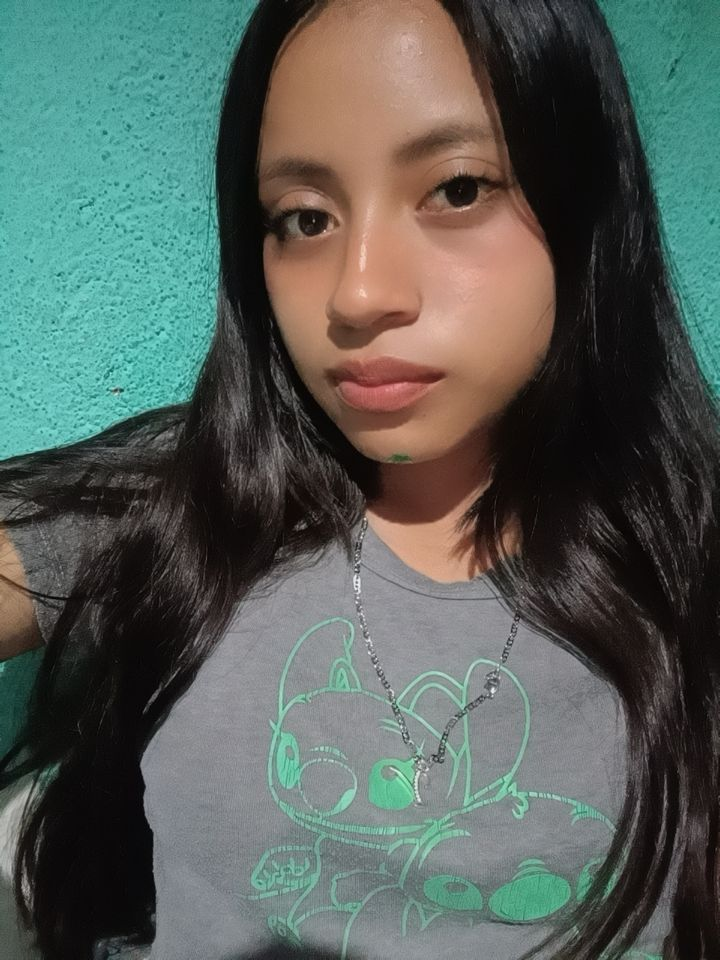

Bienvenido a mi página personal.
Ver másSoy una persona no tan responsable pero intento serlo, soy muy creativa en cosas muy personales, soy muy estricta en las decoraciones para cualquier tipo de actividades cumpleaño, decoraciones sorpresas y con ganas de aprender. Me gusta trabajar en equipo y mejorar mis habilidades cada día.
Primaria completa
Básicos completos
Diversificado en curso
Participación en proyectos escolares, actividades en decoraciones, en dibujos, canto y trabajos en equipo.
Correo: chivalanyeni805@gmail.com
Teléfono: 5788-8329